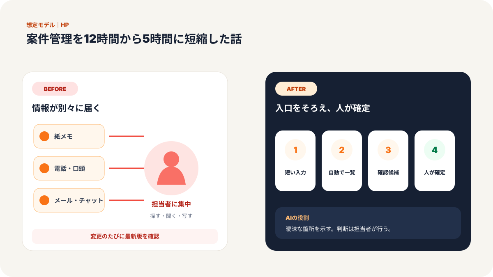
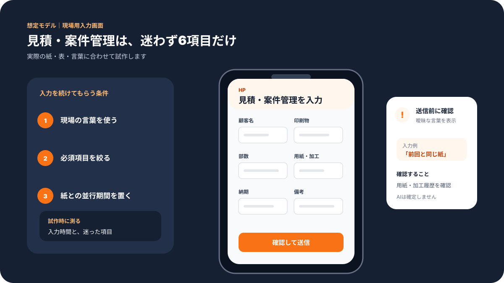
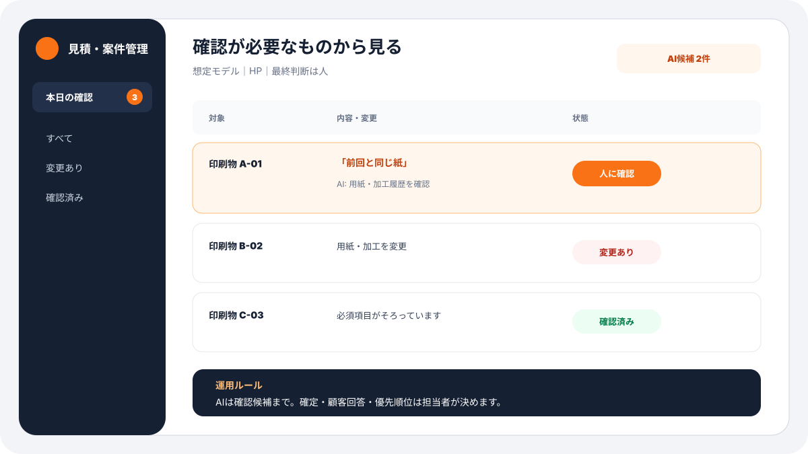
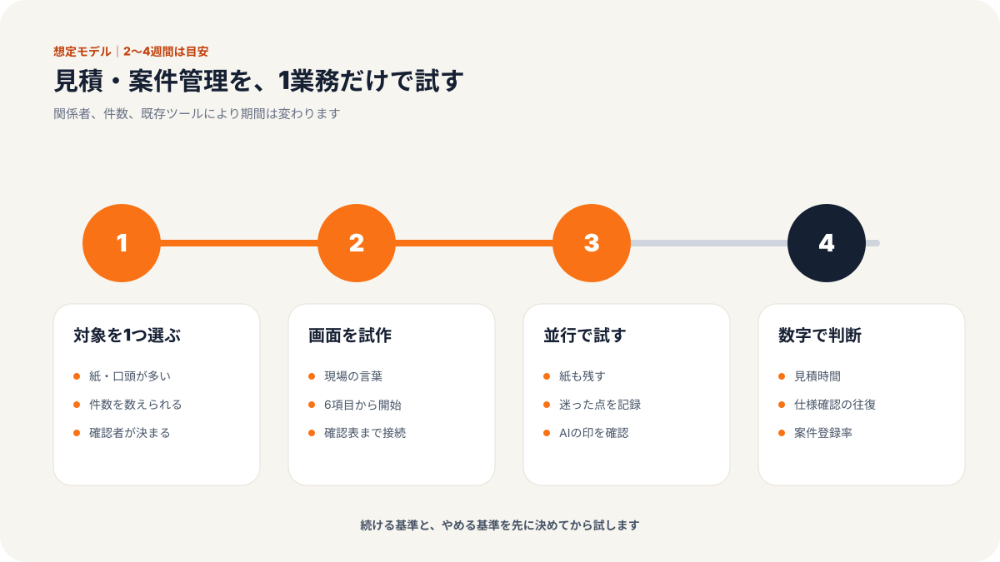
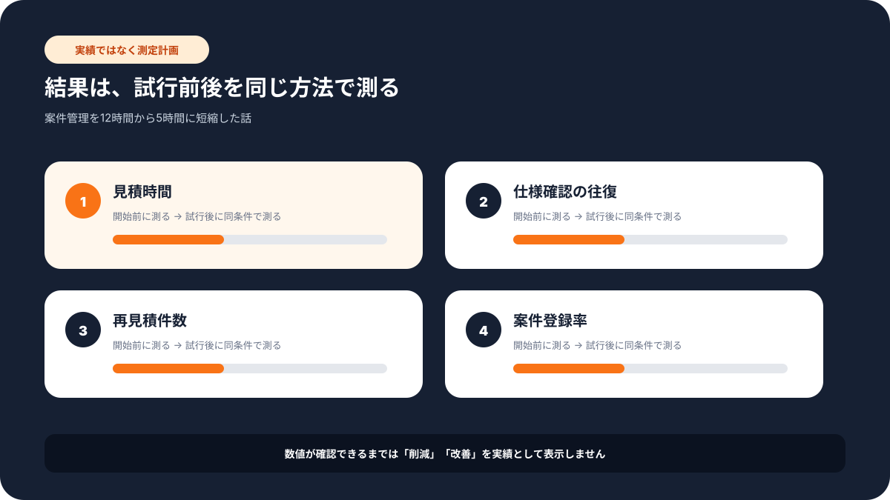

現場での使い方
この記事で変わる業務の流れ
「誰が入力し、誰が確認するか」までイメージできるよう、想定画面と導入手順をまとめています。





# 従業員15名の印刷業／案件管理を12時間から5時間に短縮した話
> 専門サービス業・印刷業／エンジニア・制作管理担当／従業員15名・九州エリアの事例
課題：案件の状況が、人の頭とメモに分かれていた
九州の印刷業A社では、チラシ、パンフレット、名刺、封筒、展示会用パネルなど、少量多品種の案件を並行して進めていました。
従業員は15名。制作担当、営業担当、印刷担当、納品担当がそれぞれ近い距離で働いているため、以前は口頭確認でも何とか回っていました。
ただ、案件が増えるにつれて問題が出てきました。
「この修正、最新版はどれでしたっけ」
「営業さんに確認したつもりだったんですが、印刷前の最終OKが残っていました」
「納品日を聞かれても、今どこまで進んでいるか確認するだけで時間がかかります」
現場では、毎日のようにこうした確認が発生していました。
特に負担が大きかったのは、案件管理です。営業が受けた依頼内容、制作データの修正履歴、印刷前の確認、納品予定日が、それぞれ別の場所にありました。
メール、手書きメモ、チャット、Excel。情報をためる場所が分かれていたため、担当者は1件の状況確認に何度も画面を開く必要がありました。
月末や繁忙期には、案件管理だけで週12時間近く使っていました。資料作成も1件あたり3時間ほどかかり、急ぎの修正が入ると本来の制作時間が圧迫されます。
A社の制作リーダーは、最初の打ち合わせでこう言いました。
「印刷の品質より、確認漏れの方が怖いんです。小さい会社なので、1件のミスがそのまま信頼に響きます」
そこで弊社では、大きなシステムを一から作るのではなく、今ある業務の流れを整理し、入力する画面とスプレッドシートを中心にした仕組みを提案しました。
施策：相談記録、進捗管理、AI確認をひとつの流れにした
今回のポイントは、現場の人が使い続けられることでした。
高機能な管理ソフトを入れても、入力が面倒なら続きません。そこで、まずは案件ごとに必要な情報を絞り込みました。
ステップ1: 案件受付の入力画面を作る
営業担当が案件を受けたら、決まった入力画面に内容を入れる形にしました。
入力項目は、顧客名、印刷物の種類、希望納期、数量、仕様、データ入稿の有無、確認が必要な点です。
これまでは営業ごとにメモの書き方が違っていました。入力画面にすることで、制作側が知りたい情報が最初からそろうようになります。
ステップ2: スプレッドシートを自動で動かす仕組みを作る
入力された情報は、案件一覧に自動で反映されます。
未着手、制作中、確認待ち、印刷準備、納品済みといった状態を一覧で見られるようにしました。
ここで大事なのは、状態を細かくしすぎないことです。現場で使う人が迷うほど項目を増やすと、更新されなくなります。
A社では、5段階に絞りました。
「これなら朝礼で見ても分かりますね」
制作リーダーがそう言ったので、まずはこの粒度で始めました。
ステップ3: ChatGPTで確認文と注意点を整える
印刷案件では、仕様の確認漏れがそのままミスにつながります。
そこで、入力内容をもとに、AIが確認すべき点を短くまとめる形にしました。
たとえば、用紙サイズ、色数、入稿データの形式、納品方法、再校正の有無です。
専門的な判断をAIに任せるのではありません。人間が確認するためのチェックリストを作る役割です。
「AIが勝手に判断するのではなく、抜け漏れを見つける係なら安心です」
現場からも、この使い方なら受け入れやすいという反応でした。
成果：案件管理時間が12時間から5時間に減った
導入後、最も大きかった変化は、確認のために人を探す時間が減ったことです。
以前は、営業担当に聞く、制作担当に聞く、チャットをさかのぼる、メールを探すという流れがありました。
今は案件一覧を見れば、まず状況が分かります。
| 項目 | Before | After | 変化 |
|------|--------|-------|------|
| クライアント対応時間 | 4時間/週 | 1.5時間/週 | 約40%削減 |
| 案件管理時間 | 12時間/週 | 5時間/週 | 約55%短縮 |
| 資料作成時間 | 3時間/件 | 1.5時間/件 | 約70%削減 |
| 顧客満足度 | 85% | 95% | 10ポイント向上 |
| 収益性 | 基準値 | 50%向上 | 高単価案件へ時間を再配分 |
制作担当からは、こんな声がありました。
「進捗確認のために手を止める回数が減りました。制作に集中できる時間が増えたのが大きいです」
営業担当も、顧客からの問い合わせにその場で答えやすくなりました。
「担当者が席を外していても、案件一覧を見れば大体の状況が分かります。折り返し待ちが減りました」
小さな会社では、1人が複数の役割を兼ねることが多くあります。そのため、情報が人にひもづきすぎると、誰かが休んだだけで業務が止まります。
今回の仕組みは、その止まりやすさを減らすことに効果がありました。
なぜ効果が出たか：新しい道具より、確認の流れをそろえたから
今回、特別に難しいシステムを入れたわけではありません。
入力する画面を作る。
スプレッドシートに情報をためる。
必要な確認をAIで整理する。
やったことは、この3つです。
それでも効果が出たのは、確認の流れをそろえたからです。
以前は、担当者ごとに確認の順番が違いました。営業は納期を重視し、制作はデータ形式を重視し、印刷担当は用紙や色数を重視していました。
それぞれ正しいのですが、情報の入り口がバラバラだと抜け漏れが起きます。
入力画面を作ることで、最初に聞くべきことがそろいました。案件一覧を作ることで、今どこにあるかが見えるようになりました。AIの確認文を使うことで、見落としやすい点を人間が確認しやすくなりました。
印刷業だけでなく、制作物や案件を複数人で進める業種では同じ考え方が使えます。
たとえば、Web制作会社、看板業、イベント会社、士業事務所、内装業などです。
大切なのは、最初から完璧な業務システムを作ろうとしないことです。
まずは、情報の入り口をそろえる。次に、進捗が見える場所を作る。最後に、確認漏れを減らす。
この順番であれば、従業員15名規模の会社でも無理なく始められます。
まとめ：印刷品質を守るには、確認作業を軽くする
印刷業では、最後の仕上がりが品質です。
ただ、その品質は印刷機だけで決まるわけではありません。受付、確認、制作、校正、納品の流れが整っていることが重要です。
A社では、案件管理を整えたことで、制作担当が本来の仕事に集中しやすくなりました。
「管理のための管理ではなく、ミスを減らして制作時間を増やすための仕組みになりました」
この言葉が、今回の成果をよく表しています。
気になる業務があれば、お気軽にお声がけください。
弊社では中小企業のAI活用・システム開発の伴走支援を行っています。